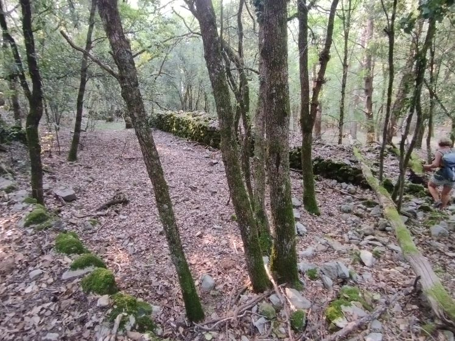
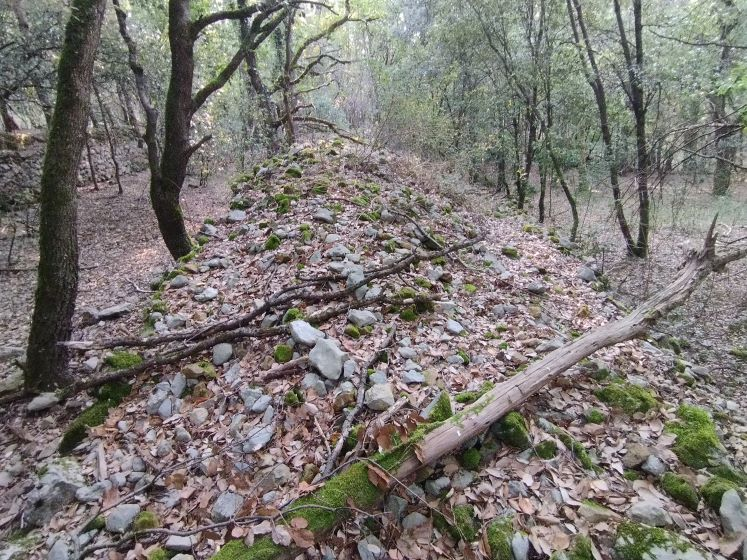
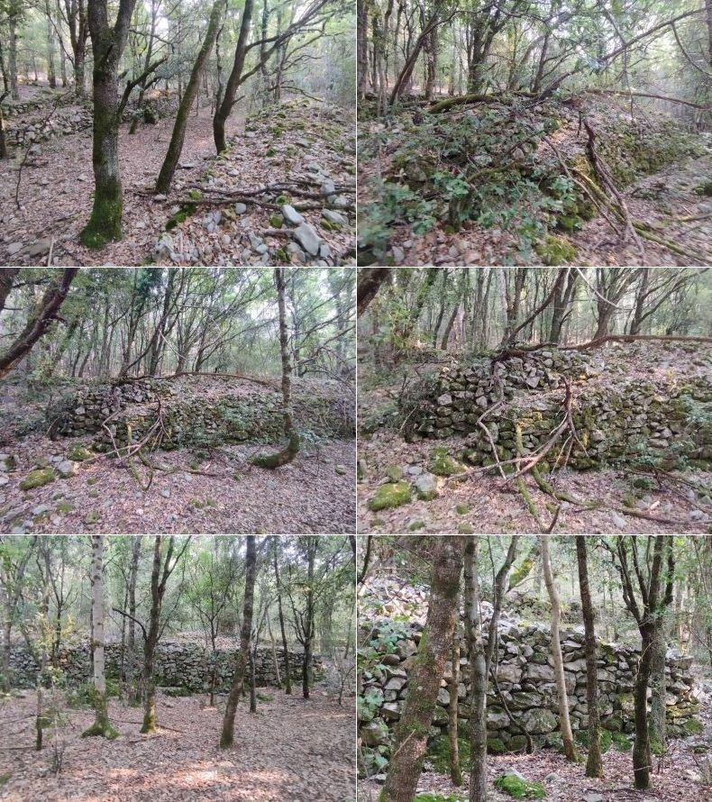
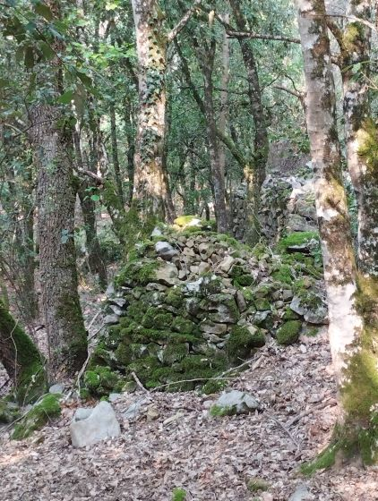
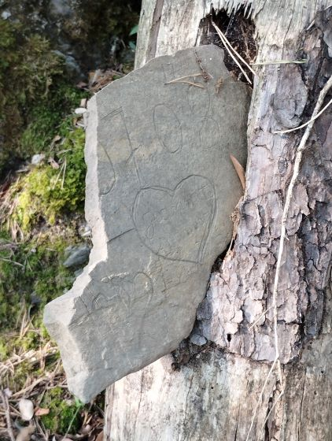

Même si St Martin Lys est au fond d'une vallée (pour piloter l'acheminement des coupes de la forêt des Fanges), les besoins alimentaires ont obligé les habitants du village à chercher des espaces cultivables dans les montagnes environnantes. En effet, le pourtour du village était insuffisant pour assurer la subsistance des plus de deux cent habitants. Aussi les martinlysois ont colonisé chaque espace à peu près plat pour y ensemencer leurs cultures. C'est pourquoi, comme à Planèses et au clot (encore au dessus de planèses), le col de gage a été utilisé.
Le col de Gage est le nom francisé donné par les Martinlysois à ce lieu, alors que les habitants de Quirbajou lui ont préféré le nom de col d'Agajos - le nom changeant à la frontière des 2 communes... Bien que très éloigné du village (au moins 2 heures de marche en grimpant par le chemin de Quirbajou) et sans point d'eau de proximité, il a été exploité par les martinlysois.
Ce "col" a la particularité d'être un petit plateau fertile à plus de 700 m d'altitude, alors que le village est à 340 m. Donc un très fort dénivelé. Pour le rejoindre aujourd'hui ont peu l'atteindre facilement en prenant la route de Quirbajou au niveau du Rebenty ; il est encore possible de prendre le chemin de Quirbajou, puis en continuant vers la croix, puis en continuant sans quitter le chemin (Il faut être au dessus de St Martin pour comprendre, mais sur place il n'y a pas de difficulté : le chemin du col de gage restant mystérieusement le mieux tracé, bien que non utilisé (sauf par des chasseurs de Quirbajou) depuis fort longtemps).

Le chemin en bleu est le chemin partant de St Martin Lys,
Le chemin en vert est celui de la route de Quirbajou, il commence sur une boucle de cette route
De nombreuses murettes séparent les champs et en particuliers celles séparant les champs des Quirbajounais de ceux des Martinlysois qui sont particulièrement large...


Les murettes séparant les champs ou restes de bergerie repérées sur le plateau
Sur la carte d'état major du début du XIXes, il est fait mention au niveau du point culminant, en bordure du plateau du col d'Agajos, d'un castel. (Castel-d'en-Prat, mont. (781), à la limite des communes de Cailla, Quirbajou et Saint-Martin-Lys.)

Sur ce sommet pas de reste particulier pouvant laisser penser à existence d'une construction, juste un point de vue magnifique à 360° comme le montrent les quelques photos proposées.

Cailla (le village et la route qui y monte) vu du Castel d'en Prat

Les champs de Cailla vus du Castel d'en Prat

Le col de St Martin, le cap de fer et le ruisseau de La borde depuis le Castel d'en Prat

Le pont d'Axat depuis le Castel d'en Prat

La vallée de l'Aude vers le pont d'Alies depuis le Castel d'en Prat

Le pont de fer Eiffel du tunnel de Bourrec depuis le Castel d'en Prat

Les gorges de Saint Georges depuis le Castel d'en Prat
D'autres photos depuis ce point de vue sont directement sur les pages correspondantes : col de saint Martin, viaduc de Rebuzo, gare, pont d'Alies
Au dessus de la croix 2 chemins peuvent monter au col de gage, un avec peu de virages qui n'est pas dessiné sur la carte ci-dessus mais qui est au final le plus naturel, et celui plein de virages apparaissant sur la carte ce qui permet de faire une boucle dans la forêt. Je n'ai pas pris de photos des embranchements de ces 2 chemins => il ne me restera plus qu'à y revenir.
Juste après l'embranchement haut se trouve le seul point de vue de la randonnée, mais quel point de vue...
Les photos que j'ai prise de là sont déjà sur mon site mais je les remets pour marquer cette rando - la seule "originale" étant celle montrant toute la nouvelle partie du "des radeliers" des vélos rail du TPCF
En arrivant au col de Gage, il y a un très grand enclos compris entre le mur du chemin et un très large (Près de 4 m) mur de pierres empilées particulier (2 niveaux de pierres avec peut-être un chemin permettant d'amener des cailloux pour relever encore). Ce mur ne semble pas séparer des terrains, servait-il simplement à accumuler des cailloux dégagés des champs voisinant ?) - c'est le même mur que celui que j'ai déjà présenté plus haut.
  Maintenant tout cet espace du col est couvert de forêt ce qui donne une embiance très particulière au sous bois, avec ces tas de cailloux bien empilés (contrairement à ceux du Clot qui sont étalés)
Sur le chemin du retour, celui plein de zigzag, le caillou des amoureux placé dans un tronc d'arbre mort
